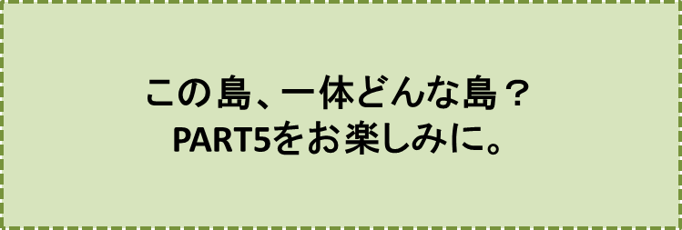

カラスの大王物語-PART4-
『大脱走』の巻
笠原正雄
外のお天気も三人と同じ気持ちだったのでしょう。晴れ上がっていた青空が少しづつ、曇り空となり、夕方には大粒の雨が降り始めました。
夜遅く、三人がもう寝ようかと思った頃には雨は一層激しくなり、雷鳴がとどろき、森全体に木霊（こだま）して、ごうごうと音を立てました。木々の葉が大きく揺らぎ、稲妻があたり一面を真昼のように明るく照らしました。
その凄まじい有様は、もうこの世の終わりかとさえ思われました。間断なく光る稲妻が僅かな隙間から牢屋の中に入り込み、明るく照らしました。
牢屋の外でずぶ濡れになって見張りを続けるクマ吉はもう我慢の限界でした。安全な牢屋の中に逃げ込もうと、重い扉をゆっくり開け始めました。
徐々に広がる扉の隙間。少しづつ、少しづつ広がります。
この隙間をジロー達三人が見逃すはずはありません。一斉に外に飛び出し、一目散、原っぱの向うに見える木立に向かいます。
振り返ると、クマ吉は扉をあけることに一生懸命で、三人が逃げたことに気付いている様子はありません。
ジロー達は遠くの木立を目指します。原っぱと違って木立なら身を安全に隠せますから。
……しかし、この時でした。遥か彼方から、クマ吉の叫ぶ声が風に乗って聞こえてきたのです。
「脱走だ！ 脱走だ！ 大変だぁ！ 大変だぁ！
ウォッー、ウォッー、ウォッー、ウォッー、ウォォォォー」
クマ吉の大声は森中に響き渡ります。この声にあちこちの木から、おサルさんの機動隊員が飛び降りて、ジロー達を探し求めて、四方八方探し回るでしょう。
もう一刻の猶予もありません。三人は木立を目指し、懸命に走ります。木立はもうすぐそこです。
三人が無事木立の中に入ったのを見届けるように、雷鳴は遠ざかり、雨は小止みになりました。
早くも月の光が、木漏れ日のように差し込んできて、木立の中を明るくしてくれます。……天も、
“逃げろ”
“逃げろ”
と言ってくれているようですね。
とにかく遠くに行こう。捕らえられたら、終わりです。ゴンを先頭にしてジローそしてタマが、木立の中を一列に並んで歩き続けます。
半時間近く、黙々と歩き続けたでしょう。目の前に広場が現れて、その向こうに大きな川が見えました。幅30メートルはあるかなと思われる大きな川がたっぷり水を蓄えて、ゆっくり流れ下っています。
牢屋から脱走して全力で走り、逃げ込んだ木立の中を1時間近く歩いたためでしょう。喉がすっかり乾いていたに違いありません。ジロー達は
“わぁ”
と歓声をあげてしゃがみ込み、たっぷり喉を潤しました。
とても美味しく、地下から、たった今、湧き出したばかりという感じの冷たぁーい水です。
追いかけられているという恐怖から、ほんの少し解放され、喉も潤って、大満足。ジローもゴンもタマも、恐さを忘れピョンピョン踊りたくなるような気分です。
……しかし新しい不安が、突如襲いました。
“一体ここはどこなんだ？”
“どの方向に歩いていけば、無事、マイ広場に辿り着けるだろう”
ぐずぐずしていたらおサルさんの機動隊員がやってくるでしょう。
どの方向に逃げるべきか。方向感覚抜群のシェパード犬、ゴンにも分かりません。ジローは焦りました。
マイ広場からカラスの大王の背中に乗って遠い所に連れてこられたのですから、ジロー達が途方に暮れるのも仕方ありませんよね。
三人がなすすべもなく座り込んでいると、
“あっ、何でしょう？”
川上からボートのようなものが流れてくるのが見えました。ゆっくり、ゆっくり近づいてきます。
ボートではありません、大仏様の手のように大きい、モクレンの葉っぱです。三人が十分ゆったり乗れるでしょう。それほどに大きく、分厚い肉質の堂々たる葉っぱです。
モクレンの葉っぱは
“さぁ、お乗りなさい”
というように目の前に泊まったままです。
渡りに船！三人は迷わず飛び乗りました。
これで無事におサルさんの機動隊の追跡を振り切ることができるでしょう。ジローは一安心です。
ボートは、月の光に照らされた夜の川を、流れ下っていきます。見上げるとまぶしいばかりに、満天の星空です。ジローの心がなごみます。
この空一杯の星空こそ本物の夜空です。ジローの心は、この星空にすっぽり吸い込まれてしまいました。いや、ジローだけではありません。ゴンもタマも身じろぎもせず星空を眺めています。
星影がさやかに照らす夜の川。三人の魂（たましい）は夜空に吸い込まれたままです。
ボートはゆっくり、ゆっくり、揺りかごのように右に左に揺れながら、川を下ります。ゆっくり、ゆっくり、ゆっくりと、ゆーらり、ゆーらり、ゆーらりと。
このボートの動きに誘われて、モクレンの葉っぱに乗ったお客さん達は、やがて眠りにつきました。
明るく強い、朝の光に、モクレンのボートのお客さん達は目を覚ましました。
いつの間にか川幅は湖かと思うほど広くなっていました。
ひょっとすると海かもしれません。ボートはどんどんスピードをあげていきます。
あっ、遠くに島が見えます。やっぱり海だったのですね。
“危ない、危ない、島にぶつかってしまうよ！”
ジローは、ボートにしっかりしがみつき、ゴンとタマは低く身を伏せました。これで少し安心です……。
でも、心配ご無用！ ボートはゆっくりスピードを落し、安全に、島の小さな浜に横づけになってくれました。
“到着でーす”
というように。
ジローはモクレンのボートに
「有難う！」
と感謝の気持ち一杯で声をかけ、島に上陸しました。ゴンもタマも続きます。
♪♪♪♪コーヒーブレイク♪♪♪♪
